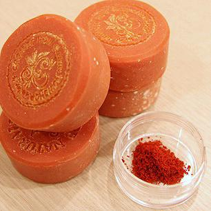

Intro to Cold Process Soapmaking
November 5, 2014
April Duangjumpa / DM+D Philly
Welcome!
- Tell us about yourself!
- Any topics you want covered?
- Feel free to ask questions!
Topics We'll Cover
- What is soap, anyway?
Key chemical players - How is soap made?
Chemical reactions and types of soapmaking - What are different properties of soaps?
Types of oils affect soap composition - How to make soap
Safety considerations, demonstration, activity
What is soap?
Chemical reaction called saponification between oils and an alkali in water to produce soap.
Key molecules: fats/oils (acidic), sodium hydroxide (alkali)
What is lye?
- Sodium hydroxide (NaOH): very alkaline and corrosive
- Uses: drain cleaner, washing and peeling of fruits and veggies, pretzels/baking, bleaching pulp for paper
- Not present in final soap product, only in reaction
- Hydrophilic, readily dissolves in water
What are fats and oils?
- Fats: solid at room temp, more saturated, usually animal
- Oils: liquid at room temp, unsaturated, usually plant
- Both are triglycerides, 3 fatty chains attached to glycerol
- Hydrophobic, does not dissolve in water
Acids and Bases
The reaction to create soap is simply an acid/base reaction.
How is soap formed?
Soapmaking methods:
- Melt and Pour
- Cold Process
- Hot Process
- Rebatching
Melt and Pour
Cold Process
Hot Process
Rebatching
How does soap clean?
Remember how NaOH is a water-loving molecule and fatty acid chains are water repellent?
What are different properties of soap?
The base oils will determine the qualities of the soap.
| ACID | SAP | Feel | Notes |
|---|---|---|---|
| Olive Oil | 25-50% | Soft/hard | Mild, can take long to trace and cure |
| Coconut Oil | 15-30% | Hard | Bubbly, too much can be too drying |
| Palm Oil | 25-50% | Hard | Long lasting and stabilizing |
| Castor Oil | 5-10% | Soft | Adds creaminess; too much will feel sticky |
Other common oils: lard, tallow, avocado, canola, hemp seed, shortening, shea butter, cocoa butter
Getting started in soapmaking
- Choose your base oils or find a recipe
- Calculate your lye solution or use an application
- Additives: scents, colors, essential oils (0.4 - 0.7 oz/lb)
Safety considerations
- Wear appropriate clothing, goggles, and gloves.
- If on skin - flush with water, wash with soap and water.
- NaOH + H2O = highly exothermic (up to 200F), heat and fumes released. Ventilate and avoid fumes!
- NaOH reacts violently with aluminum, tin, and zinc. Use appropriate equipment that can withstand the heat.
- NEVER add water to acid. SLOWLY add acid to water.
Let's get started!
- Make your lye solution (lye to water), set aside.
- Combine oils and melt, maintain between 100-130F.
- When lye and oils are between 100-130F, pour lye in oils.
- Stir until trace; add colors/additives if desired.
- Pour into mold and let sit for 24-48 hours. Cure 4-6 weeks.
Essential oils and fragrances
- Essential oils: naturally derived, concentrated
- Tea tree: antiseptic, antibacterial, antifungal, antiviral
- Eucalyptus: relieving properties
- Lavender: antibacterial, relieving
- Fragrance oils: synthetic blends
Soap additives
Soap additives - herbs
Soap additives - seeds

Soap additives - tea
Soap additives - coffee
Soap colors

Soap colors - pigments
Soap colors - clays

Soap colors - spices
Advanced techniques
Advanced techniques - layers
Advanced techniques - swirls

Advanced techniques - milks
Advanced techniques - beer
What's next?
- Saponification will take 24-48 hours to complete.
- Store with air flow, away from light.
- Curing will occur over 4-6 weeks.
- Continue to pH test your soaps - normal soap has pH between 8 and 10.5.
Have fun!
Slides available online at http://nduangjumpa.github.io/cp-soap